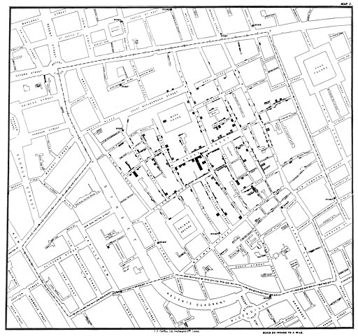
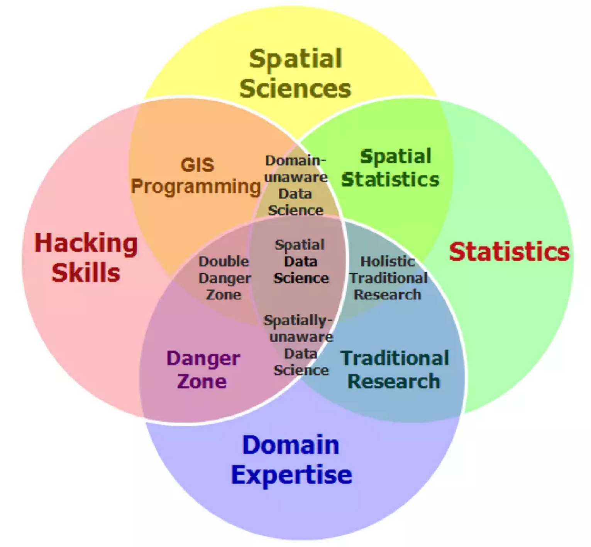

Data Science for Public Health
Concepts, Applications and Case Studies
Dr. Arun Mitra Peddireddy
Dept of Community and Family Medicine,
All India Institute of Medical Sciences (AIIMS), Hyderabad
What is Public Health?
Public health is the science and practice of protecting and improving the health of a population.
Core functions include disease prevention, health promotion, and surveillance.
Public Health
Public Health is multi-faceted and interdisciplinary, involving experts from various fields, including epidemiology, biostatistics, health services research, and behavioral sciences, to address the complex determinants of health.

Grand Challenges in Healthcare

To measure health & disease status accurately and economically in poor countries
- GC 13: Develop technologies that permit quantitative assessment of population health status.
- GC 14: Develop technologies that allow assessment of individuals for multiple conditions or pathogens at point-of-care.
Public health Challenges for the 21st century
- poverty and economic disparities
- climate change
- infectious disease epidemics
- living environments (urban living)
- safe water and healthy food
- non-communicable diseases including mental health
- inadequate human resources in health
- poor health systems financing

National Digital Heath Blueprint
Domain Principles
Think Big, Start Small, Scale Fast
- Educate
- Empower
- Accountability
- Portability
- Secure by Design
Technology Principles
Single Source of Truth
- Building Blocks
- Interoperable
- Leverage Legacy
- Open APIs
- Minimalist by Design

Policy Intention - Health Outcomes: Gaps
Gap between health policy intentions and their practical implementation
Challenges within the existing health information systems
Need for Research on how to transform these technology adoption policies into actionable strategies that improve health outcomes
Policy Implementation Science
Learning Health Systems

Reproducible Research
There are four key elements of reproducible research:
- data documentation
- data publication
- code publication,
- output publication.

Applications of GIS in Public Health
- disease surveillance
- environmental health
- infectious diseases
- mathematical modelling
- agent based modelling
- population genetics
- medical imagining
- cancer biology


While traditional uses of GIS in healthcare still are relevant, newer methods and advancing technology would be monumental for public health research.
What is Spatial Data Science?
Definition
Spatial data science (SDS) is a subset of Data Science that focuses on the unique characteristics of spatial data, moving beyond simply looking at where things happen to understand why they happen there.

Like data science, spatial data science seems to be a field that arises bottom-up in and from many existing scientific disciplines and industrial activities concerned with application of spatial data, rather than being a sub-discipline of an existing scientific discipline.
Edzer Pebesma, Roger Bivand - Spatial Data Science With Applications in R
How is it different from Data Science?

How is it different from Data Science?

Why Spatial Data Science for Public Health?

Why Spatial Data Science for Public Health?

Why Spatial Data Science for Public Health?
Wealth of Spatial Data
70% of all data that is generated data has spatial attributes
Routine health data can be geo-referenced
Provide a gateway for researchers and practitioners to examine the role and harness the power of SDS in public health
Coupled with the emerging field of spatial statistics, the analysis of this location-based data is developing new and novel directions for public health.
Core Concepts related to GIS
Spatial data are fundamental to many geographical analyses and spatial data science draws strongly from key geographical concepts
First Law of Geography
Tobler’s First Law
“Everything is related to everything else, but near things are more related than distant things”
Waldo Tobler, 1970

Spatial Autocorrelation
Refers to the presence of systematic spatial variation in a mapped variable.
The terms spatial association and spatial dependence are often used to reflect spatial auto- correlation as well.

Indices to measure Spatial Dependence
Covariance Functions and Variograms
Global Spatial Autocorrelation Measures
- Moran’s I index
- General G-Statistic
- Geary’s C index
Local Indicators of Spatial Association (LISA)
- Local Moran’s I index
- Getis-Ord Gi and Gi∗ statistics
Space-Time Correlation Analysis
- Bivariate Moran’s I for STC
- Differential Moran’s I
- Emerging Hot Spot Analysis (EHSA)


Core Concepts related to GIS
Map Projections & coordinate reference system (CRS)
Map projections try to transform the earth from its spherical shape (3D) to a planar shape (2D).
A CRS then defines how the two-dimensional, projected map in your GIS relates to real places on the earth.
The decision of which depends on the extent of the area, analysis type, and often on the availability of data.

Tools for Spatial Data Science
- GIS related
- Data Science related
- Spatial Data Science related
R is the best spatial data science tool available for public health !!!
R provides a range of powerful packages for geospatial analysis, enabling advanced computations and analytics.

R Spatial Analysis Ecosystem

R Spatial Learning Resources
Wealth of Resource material
Powerful tools/packages
seamlessly handle vector and raster data
inractive visualization
end-to-end solution

Newest addition: Spatial Data Science: With Applications in R

The sf package

The sf package is an R implementation of Simple Features.
This package incorporates:
a new spatial data class system in R
functions for reading and writing data
tools for spatial operations on vectors
Geometry Types in sf


Data for Better Lives

Trust and Data

Where are we now?